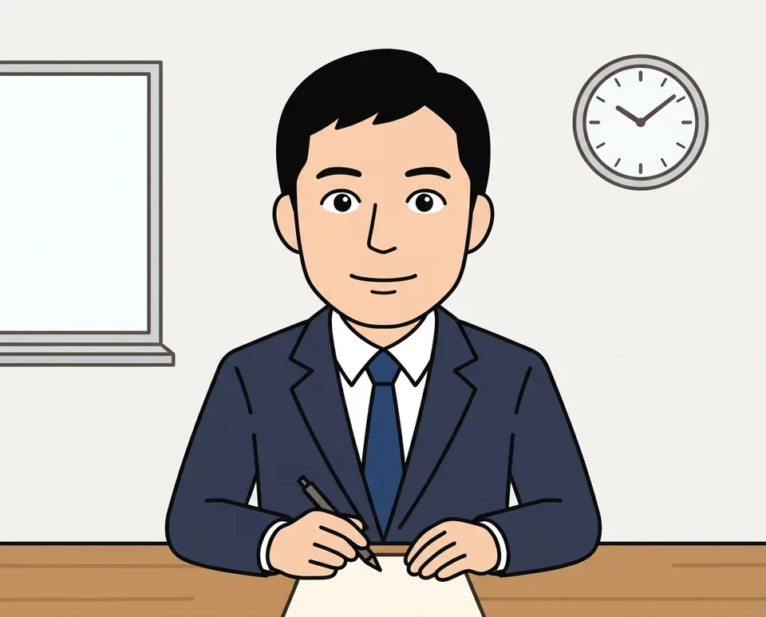

音量を上げて、押してください。声が聞こえたら準備OKです。
ENG が出てこないとき：Windowsの設定 →「時刻と言語」→「言語と地域」で、英語 (米国) の「…」→「言語のオプション」→「キーボードの追加」から「米国」（QWERTY）を入れます。英語 (米国) そのものが無いときは、先に「言語の追加」で English (United States) を足します（「Windows の表示言語として設定する」のチェックは外す）。
English が無いとき：設定 →「一般」→「キーボード」→「キーボード」→「新しいキーボードを追加」で「英語（米国）」を足します。
このページでは、ブラウザが娘さんの英語を直接聞き取ります。面接官の質問が終わると自動で聞き取りが始まり、「こたえた」を押すと止まります。
パソコンは Chrome か Edge、iPad は Safari で開いてください。
面接官の目を見て、大きな声でこたえよう。聞きとれなかったときは「Pardon?」と言っていいよ。

紙で練習したいときに。A4横のPDFを保存して、共有メニューから印刷できます。